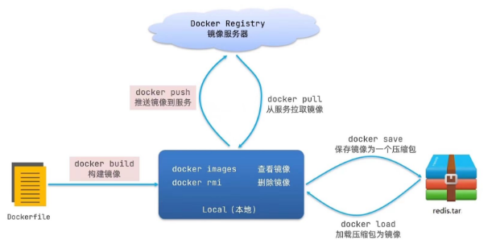
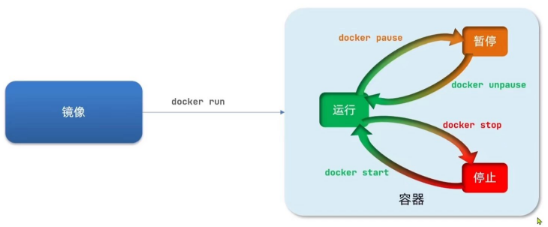
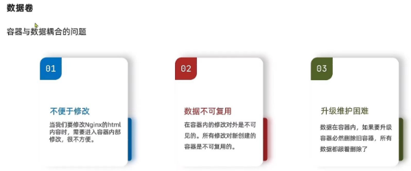

0. 简介
本文主要讲述的Docker的基本原理、安装和常用基础命令。
1. Docker介绍
2. 安装Docker - CentOS
2.1 卸载Docker
1
2
3
4
5
6
7
8
| $ sudo yum remove docker \
docker-client \
docker-client-latest \
docker-common \
docker-latest \
docker-latest-logrotate \
docker-logrotate \
docker-engine
|
2.2 安装Docker
- 安装yum-utils
1
2
3
| $ sudo yum install -y yum-utils \
device-mapper-persistent-data \
lvm2
|
- 更新镜像源
1
2
3
| $ sudo yum-config-manager \
--add-repo \
https://mirrors.aliyun.com/docker-ce/linux/centos/docker-ce.repo
|
- 安装Docker
1
| yum install -y docker-ce
|
- 查看docker是否安装成功
2.3 启动Docker
在使用docker的时候需要开放各种端口的防火墙，但是为了学习方便，所以这里我们直接关闭防火墙
- 查看防火墙状态：
systemctl status firewalld
- 关闭防火墙：
systemctl stop firewalld
- 关闭防火墙开机自启动：
systemctl disable firewalld
- 启动docker
- 查看docker状态
2.4 镜像加速
阿里云镜像加速网站
3. 基本操作
Docker的基本操作分为
3.1 镜像相关命令
镜像名称的组成：:
如果没有指定tag，那么tag默认是latest，代表最新版本的镜像

3.2 容器相关命令

- 查看所有容器的命令：
docker ps
- 进入容器执行命令：
docker exec
- 查看容器的日志：
docker logs
- 创建一个容器
1
| docker run --name <containerName> -p <originPort>:<containerPort> -d <image>
|
- 持续跟踪容器日志
1
| docker logs -f <containerName>
|
- 进入容器
1
| docker exec -it <containerName> bash
|
- -i：表示交互
- -t：表示终端
- bash：交互式shell
- 关闭所有容器
1
| docker stop $(docker ps -a -q)
|
- 开启所有容器
1
| docker start $(docker ps -a -q)
|
3.3 数据卷操作

数据卷是一个虚拟目录，指向宿主机文件系统种的某个目录。
- 基本操作
- create：创建一个数据卷
- inspect：显示一个或者多个volume的信息
- ls：列出所有的volume信息
- prune：删除没有使用的volume
- rm：删除一个或者多个指定的volume
- 数据卷的挂载
1
| docker run --name <containerName> -v <volumeName>:<containerFileName> -p <originPort>:<containerPort> nginx
|
3.4 自定义镜像
- 镜像是将应用程序及其需要的系统函数库、环境、配置、依赖打包而成。
使用dockerfile来进行自定义镜像
3.5 DockerCompose
Docker Compose | 菜鸟教程 (runoob.com)
Docker Compose 可以基于 Compose 文件帮助我们进行快速部署分布式应用，而无需进行一个个的创建和运行容器。
Compose 是一个文本文件，通过指令定义集群中的容器如何运行
Docker Compose 将命令
1
2
3
4
5
6
7
8
9
10
11
| docker run \
-- name mysql \
-e MYSQL ROOT PASSWORD=123 \
-p 3306:3306
-v /tmp/mysql/conf/hmy.cnf:/etc/mysql/conf.d/hmy.cnf \
-v /tmp/mysql/data:/var/lib/mysql \
-d \
mysql:5.7.25
docker build -t web:1.0
docker run --name web -p 8080:8080 -d web:1.0
|
转化为文件
1
2
3
4
5
6
7
8
9
10
11
12
13
| version: "3.8"
services:
mysql:
image: mysql:5.7.25
environment:
MYSQL_ROOT_PASSWORD: 123
volumes:
- /tmp/mysql/data:/var/lib/mysql
- /tmp/mysql/conf/hmy.cnf:/etc/mysql/conf.d/hmy.cnf
web:
build: .
ports:
- 8080:8080
|
- 安装 Docker Compose
1
| curl -L https://get.daocloud.io/docker/compose/releases/download/v2.4.1/docker-compose-`uname -s`-`uname -m` > /usr/local/bin/docker-compose
|
- 给 Docker Compose
1
| sudo chmod +x /usr/local/bin/docker-compose
|
- 测试是否安装成功
3.6 搭建私有镜像仓库
4. 实战
将一个微服务项目使用docker进行部署